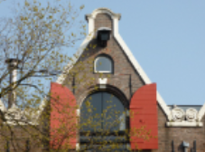
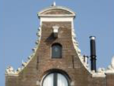

Paseando por Amsterdam llaman la atención las terminaciones de las fachadas de las casas, todas parecidas pero todas diferentes.
Son los llamados bastiales o piñones, un elemento arquitectónico que remata la fachada y que queda enmarcado por las dos vertientes del tejado. Se trata de un elemento decorativo cuyo estilo fue evolucionando a lo largo del siglo XVII hasta ser sustituidos por balustradas y cornisas barrocas.
El hastial en pico, o de caño, es el más común en los almacenes del siglo XVII y consiste en una protuberancia rectangular en el extremo del edificio.
El hastial escalonado, más ornamentado, se puso de moda en el primer tercio del siglo XVII en las casa particulares.
El hastial campana se puso de moda entre 1660 y 1670.
